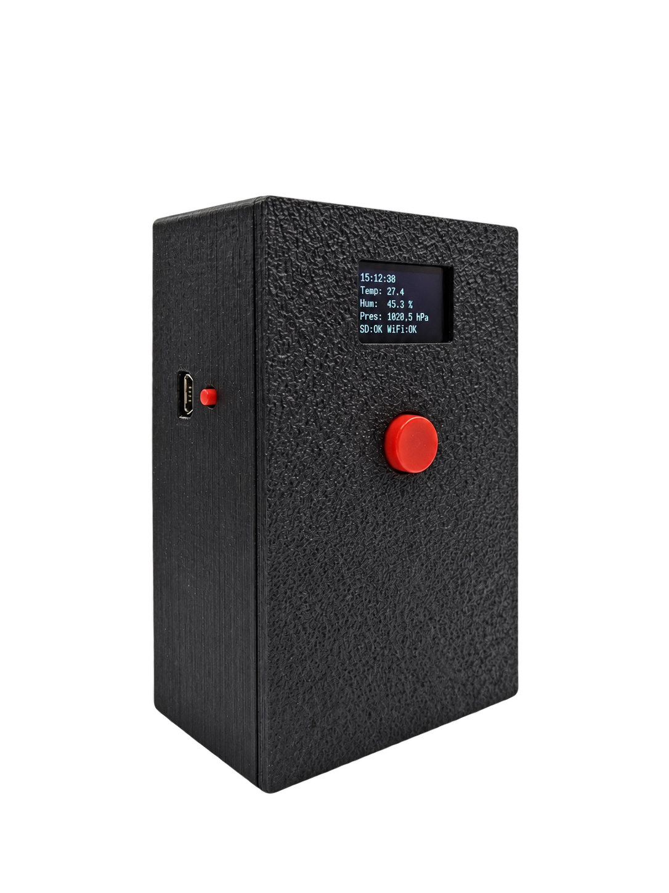

01
El presente,
de un vistazo.
Consultá temperatura, humedad y presión juntas. Un punto de partida claro para conocer tu ambiente.
DATALOGGER / MONITOREO AMBIENTAL
Dejá de mirar números aislados. Conocé las condiciones de tu entorno, seguí sus cambios y encontrá toda la información en un solo lugar.

01 / DE LOS DATOS A LAS DECISIONES
Datalogger reúne las condiciones del ambiente y su evolución para que puedas consultarlas con claridad, sin perderte entre pantallas.
Consultá temperatura, humedad y presión juntas. Un punto de partida claro para conocer tu ambiente.
Seguí la evolución de las mediciones. Los gráficos te ayudan a reconocer variaciones a lo largo del tiempo.
Volvé a tus registros anteriores y ubicá cada lectura en su fecha y hora. No te quedes solo con el momento.
02 / EXPLORÁ LA EXPERIENCIA
Estas son las pantallas reales de Datalogger. Elegí una vista para explorar sus funciones o ampliá una captura para ver los detalles.
Consultá temperatura, humedad y presión juntas. Una vista general para entender qué está pasando sin recorrer distintas pantallas.
Tres variables. Un panorama completo.
Revisá la lectura actual y su evolución. Los mínimos, máximos y promedios te ayudan a poner cada valor en contexto.
Más contexto para interpretar cada lectura.
Seguí la humedad relativa a lo largo del tiempo y reconocé sus variaciones con un gráfico fácil de consultar.
Una forma simple de reconocer variaciones.
Observá la presión atmosférica y su evolución. Completá tu panorama ambiental con información presentada de forma clara.
Una mirada más completa del entorno.
Volvé sobre tus mediciones anteriores, identificá cuándo se registraron y seguí los cambios de tu ambiente a lo largo del tiempo.
Tus registros anteriores, disponibles para consultar.
Las imágenes muestran la interfaz del producto; no son mediciones en vivo.
TRES MIRADAS DEL MISMO AMBIENTE
Reconocé los cambios y poné cada lectura en contexto.
Ampliar captura
Seguí la humedad de tu ambiente de un vistazo.
Ampliar captura
Completá el panorama de las condiciones del entorno.
Ampliar capturaCapturas completas del producto. No son mediciones en vivo.
03 / RESPALDO PROFESIONAL
Certificado por el director del Laboratorio de Robótica del INTI
Un producto pensado para acercar las condiciones del entorno a quienes necesitan entenderlas.
04 / NUESTRO EQUIPO
Cinco miradas que unen diseño, desarrollo y coordinación para construir Datalogger.
Coordinación y desarrollo
Software y conectividad
Software y datos
Diseño y electrónica
Diseño y comunicación
EMPEZÁ POR CONOCER TU AMBIENTE